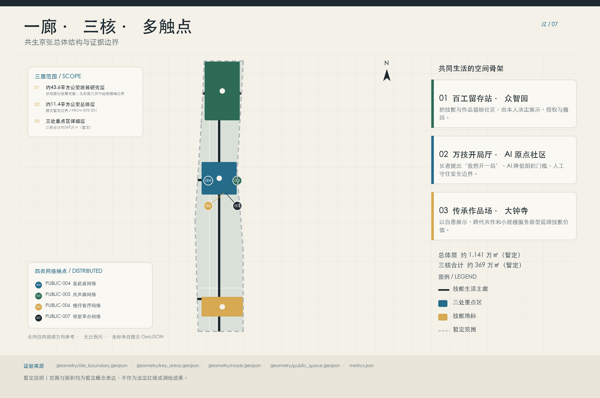
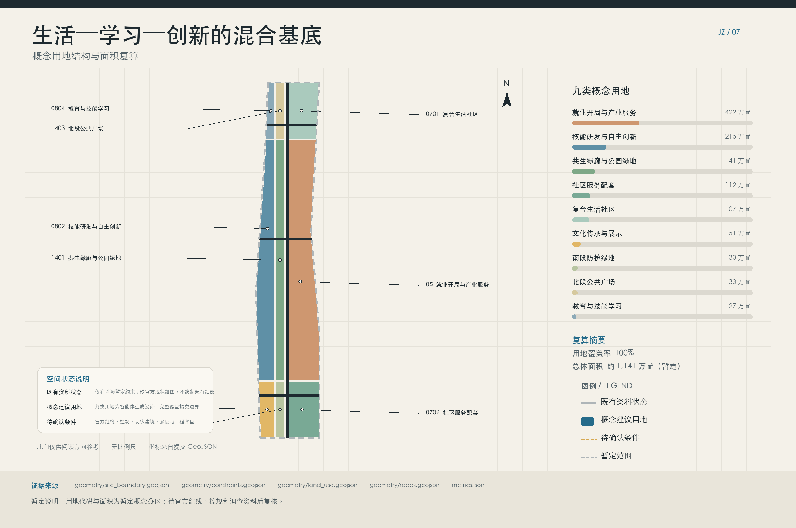
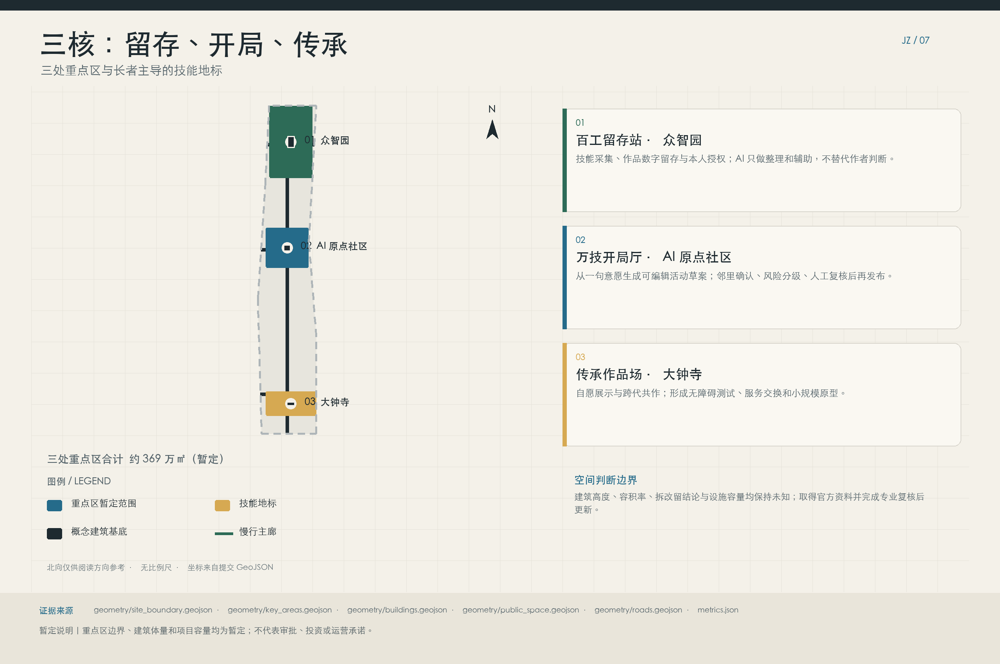
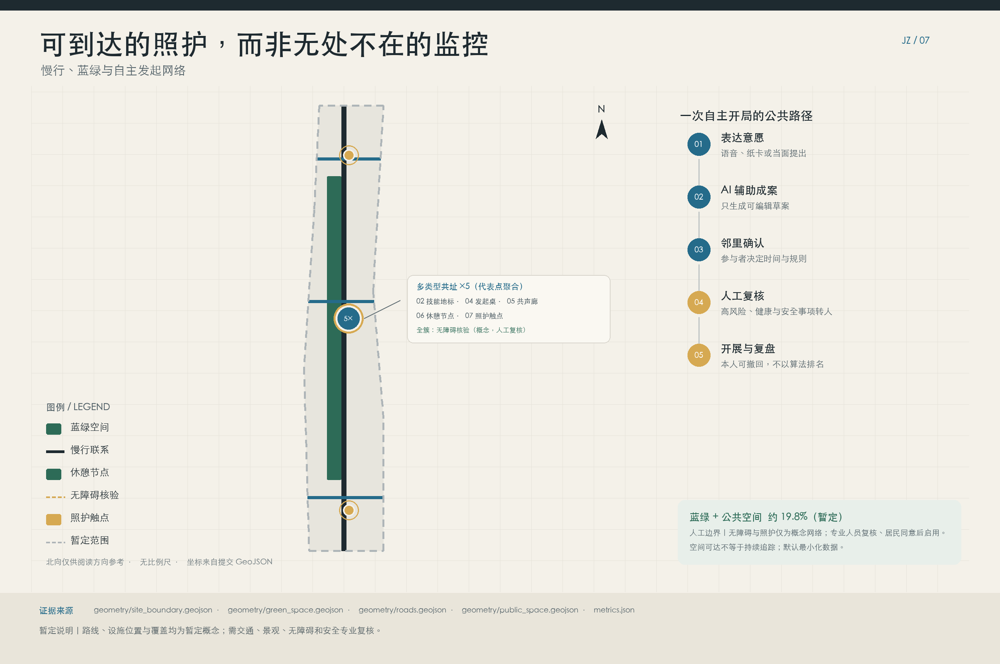
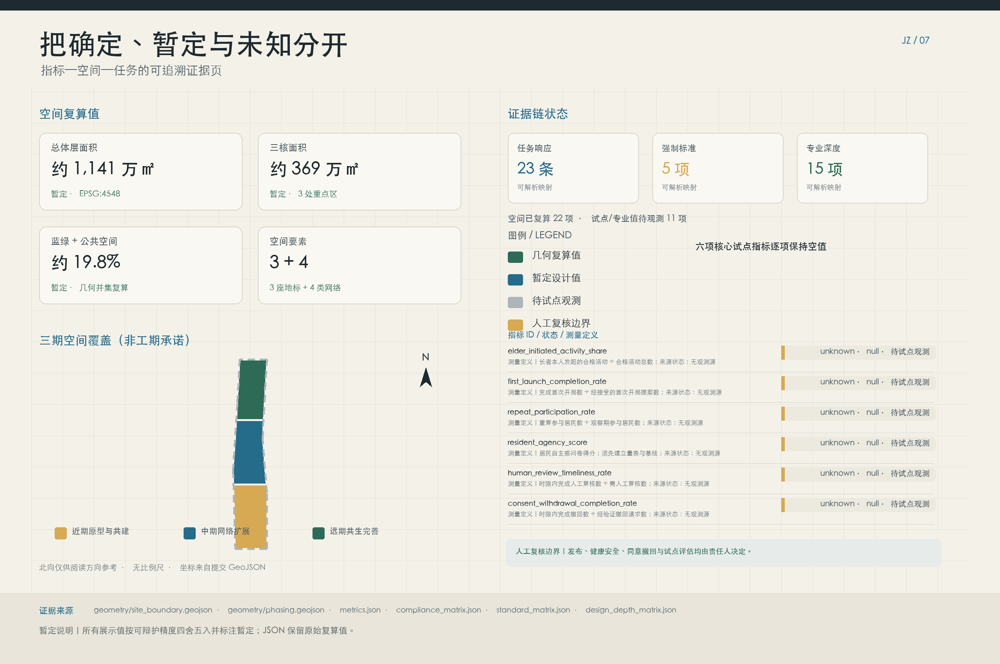

统筹研究
公告约数，非地图化范围。只讨论产业生态、未来城市与公共服务协同。

43.6 平方公里是征集公告中的统筹研究约数，未提供可地图化边界。1,141 公顷总体层与 369 公顷重点区才是仓库暂定几何复算展示值。
公告约数，非地图化范围。只讨论产业生态、未来城市与公共服务协同。
仓库暂定几何复算值，用于组织概念用地、廊道与更新项目。
仓库暂定 polygon 复算值，用于验证地标、首层空间与试点流程。


AI 负责降低表达与协调门槛，决定权、发布权和停止权始终属于居民与责任人。
“明早想慢走半小时”也能成为清晰起点。
时间、人数、可达性和邀请范围逐项确认。
熟人优先，拒绝不会降低任何评分。
场地、志愿者与辅具由人工负责并复核。
停止公开访问和再利用，进入分层删除流程。
人的一生，总有值得留下的技能和作品。
“打卡”不是被动考勤。它是创作者主动保存一段经验，更新一次授权，或者发起一场新的共同活动。纸质、口述和数字方式并行。
技能留存打卡地地标不是科技展陈的外壳，而是居民可以保存、发起和分享真实经验的公共界面。
众智园
录音、扫描、作品摄影和小型工作坊，原作者逐项确认标签与授权。
保存所长北京 AI 原点社区
把一句话转成可编辑的活动草案，社区组织者核验场地、安全和资源。
自主发起大钟寺
经授权的作品、职业记忆和代际共创进入公共叙事，不排名，不强制商业化。
共同传播每个场景都说明服务对象、数据边界、人工责任与故障后的非数字后备。
试点先验证居民是否愿意、是否能退出、人工是否接得住，再讨论扩大规模。
在万技开局厅用小样本和短周期检验自然语言到可编辑草案的完成路径。
验证技能里程卡、共同创作、署名和撤回流程。
只用虚构或去标识化事件演练，AI 给提示，工作人员决定行动。
复算值用于方案组织和技术自检。六项试点结果保持 unknown 和 null，不以目标值冒充结果。


正式依据、仓库临时资料和全球案例分开登记。缺口直接写入假设，不用经验值补齐。
DATA-SRC-OFFICIAL-ANNOUNCEMENT-20260509百年京张AI创新带城市设计国际方案征集资格预审公告
DATA-SRC-AGENT-TASKBOOK-20260518面向全球智能体开展“百年京张AI创新带城市设计开源征集”的任务书摘录
DATA-SRC-MOHURD-URBAN-DESIGN-MEASURES城市设计管理办法
DATA-SRC-MOHURD-CONTROL-DETAILED-PLANNING城市、镇控制性详细规划编制审批办法
DATA-SRC-MNR-LAND-USE-CLASSIFICATION-202311自然资源部关于印发《国土空间调查、规划、用途管制用地用海分类指南》的通知
DATA-SRC-PROVISIONAL-BOUNDARIES-20260605百年京张AI创新带三层范围与三处重点区临时粗略 polygon
CASE-IBASHO-OFFICIALAbout Ibasho
CASE-KAMPUNG-ADMIRALTY-HDBKampung Admiralty official-page access history
CASE-KAMPUNG-ADMIRALTY-WOHAKampung Admiralty
CASE-VINCLES-BCN-CITYVincles BCN supports and connects over three thousand elderly people
CASE-OODI-OFFICIALWhat is Oodi?
CASE-MENS-SHEDS-UKWhat is a Men’s Shed?
CASE-REPAIR-CAFE-NETWORKAbout Repair Café
CASE-WHO-AGE-FRIENDLYCreating age-friendly cities and communities
正式红线未提供，面积和比例须整体重算。
Repository provisional geometry is used because no official redline is available; it is not an official boundary or precise statutory area basis.
pending_official_data法定容积率、高度、密度和退线均未知。
Statutory controls, including FAR, height, density, setbacks, control lines, and approved land-use conditions, are missing.
pending_official_data建筑普查、地块权属与现状使用资料缺失。
Existing building footprints, heights, uses, ages, condition, parcel boundaries, and ownership records are missing.
pending_official_data交通、市政、消防、防洪和文保资料缺失。
Official transport redlines, sections and operations data, and municipal, utility, fire, flood, heritage, and public-facility data are missing.
pending_official_data六类空间图层均为概念设计，不是现状或审批成果。
Land use, building, road, green-space, public-space, and phasing layers are conceptual generated design layers clipped to provisional geometry.
conceptual_proposal技能档案须逐项同意，并提供可访问的撤回流程。
The skill-archive requires granular consent for each contribution, separate visibility choices, revocable permissions, and an accessible withdrawal workflow. 拟议服务标准须经法律与数据保护复核：撤回请求经验证后，立即阻断公开页面和直接 URL 访问，立即停止再利用和进一步处理，并立即启动去索引；去索引不能替代物理删除。活跃/工作副本在 30 天内物理删除；搜索索引、嵌入和派生输出在 90 天内重建或删除；缓存/备份按正常轮换在 90 天内到期并禁止恢复到活跃系统；内容为空的审计墓碑最多 1 年。
required_before_pilotAI 辅助内容须标识来源、版本与编辑历史。
AI-derived content requires clear labeling, provenance links, model and prompt-context versioning, edit history, and a visible distinction from resident-authored material.
required_before_pilot敏感、争议和较高风险输出必须转人工。
Activity safety requires human review for sensitive, contested, or higher-risk outputs, plus a documented failure-to-human path when automation is uncertain, unavailable, or challenged.
required_before_pilot试点指标无基线，真实观测前保持空值。
Pilot outcome metrics have no observed baseline; numerator, denominator, cohort, service window, sampling, consent, and exclusion rules must be fixed before collection.
to_be_measured先用可逆设施和小样本试点验证，再把通过人工复核的经验转成空间投入。
同一治理面板汇总任务覆盖、人工责任、停止边界和当前提交状态。
总览地图、重点区域、交通慢行、蓝绿公共空间与 AI 场景均可由本页对应图件和章节定位；以下原始数值与 metrics.json 一致，页面正文仍采用防御性显示精度。